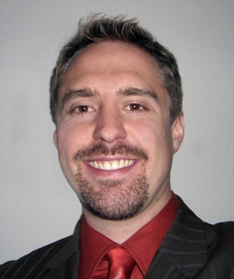
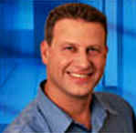
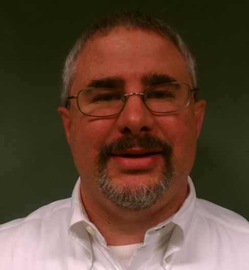
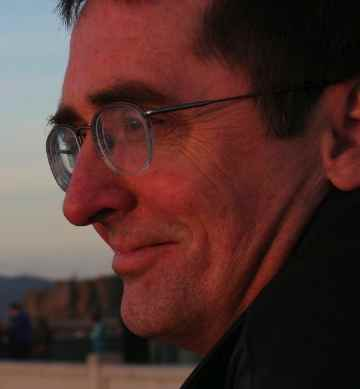
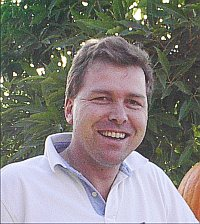
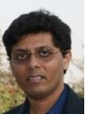
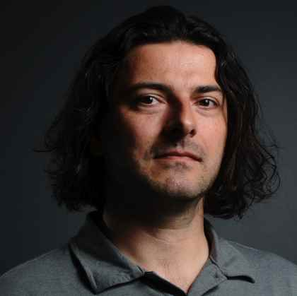

About JCP
Get Involved
Community Resources
Community News
FAQ
Contact Us
About JCP
Get Involved
Community Resources
Community News
FAQ
Contact Us

|
|
Java Community Process: SE/EE EC Elections nominees for 2011

|
The open nomination period for the 2011 Java Community Process (JCP) Program Executive
Committee (EC)
elections runs from 30 September 2011 through 13 October 2011. This page is being updated with information about the candidates as they are nominated. Once the nomination period has closed, the elections will commence on 18 October 2011 and run through 31 October 2011. The EC Elections process was launched in
June 2000.
The following seats are up for the 2011 JCP EC Elections:
Intel and Werner Keil on the SE/EE EC, and Sean Sheedy and Alex Terrazas on the ME EC.
To see information about the candidates for the ME EC, visit the ME nominees page.
For more information about the current Executive Committee, please refer to the Executive Committee Information page.
What follows are the qualification statements of the candidates for the Executive Committee, along with a brief biography of the person who would serve as the Member's representative on the Executive Committee if elected, and a position paper when one was provided.
| 2011 SE/EE EXECUTIVE COMMITTEE RATIFIED ELECTION SEAT CANDIDATES
|
Ericsson AB
|
Ericsson has a long history with standardization within many different standardization forums such as 3GPP, IEE etc. Within JCP Ericsson is engaged in all aspects of Java standardization and especially in defining the next version of the Java EE platform. Ericsson has participated in over 40 JSRs, and has been the spec lead for several (e.g. JSR-281, JSR-319).
Ericsson is also contributing in other ways, such as releasing our SIP-servlet container to the open source community in order to provide enhanced communication capabilities closely associated with Java EE. Java plays an increasing role in the emerging all IP communication networks and for us Java EE servers and SIP servlets are a logical choice to enable quick development of new services within the telecommunication industry.
Ericsson nominates Magnus L�nnroth. He is specialized in middleware/internet and database technologies with broad knowledge of relevant software topics. He is a strong supporter of open technologies and was a charter member of the World Wide Web Consortium's Mobile Web Initiative (W3C MWI) and worked in the Steering Council between May 2005 and Dec 2009. Magus has pioneered database-driven web technology, server-side Java, and Java/CORBA integration and has led the implementation of several very large Java-based mobile data services.
Now Ericsson seeks your support for our nomination of Magnus L�nnroth in order to offer technology leadership and strong support to evolve the JCP and to promote Java as the technology of choice for the telecom industry. We will work for openness and transparency within the Java standardization and continue our contributions within the standardization and open source communities.
|
Magnus L�nnroth
|
Magnus L�nnroth has spent 25 years creating commercial software at Oracle Corp, Drutt, and now Ericsson. He has led the entire life-cycle of many large scale and commercially successful software products including Oracle Application Server and Ericsson Mobile Service Delivery Platform. Magus pioneered database-driven web technology, server-side Java, and Java/CORBA integration while at Oracle, and has led the implementation of very large Java-based mobile data services at Drutt and later Ericsson. He is specialized in middleware/internet and database technologies with broad knowledge of relevant software topics. He has been awarded two software patents in areas of database/web integration and XSLT-based device-independent content rendering. He is a strong supporter of open technologies and was a charter member of the World Wide Web Consortium's Mobile Web Initiative (W3C MWI) and worked in the Steering Council between May 2005 and Dec 2009.
|
| | |
Intel
|
A significant population of developers and end-users run Java on Intel architecture platforms, providing Intel with unique perspectives on the Java platform, that of software and hardware working together to move Java forward. Intel has actively contributed to the JCP since 2002, participated in more than 20 JSRs, worked with major JVM vendors on Java optimizations, published many research papers and participated in major conferences, including many presentations and keynotes.
Intel position statement (.pdf file)
|
Anil Kumar
|
Anil Kumar has been at Intel Corporation for more than 14 years, playing various roles in the Software and Services Group. He is currently Sr. Staff S/W Performance Engineer and plays active roles in Java eco-system by contributing to standards organizations, several benchmarks (SPECjbb2005, SPECjvm2008, SPECjEnterprise2010 etc.), customer applications by enabling better user experience and resource utilization, and default performance for h/w and s/w configurations. His past experience in several areas like graphics, memory, platform evaluation, software development, virtualization and Cloud along with his in-depth advance computer architecture background makes him well positioned to contribute in the main stream Java as well as future emerging heterogeneous environments.
|
| | |
SAP
|
SAP helps companies of all sizes and industries run better. With over 160,000 enterprise customers, SAP is the world�s leading provider of business software. A significant portion of those SAP customers run SAP or SAP partner solutions based on Java. SAP has participated in the JCP since 2001, and SAP engineers have participated in over 50 JSRs. SAP is committed to ensuring the continued success of the Java platform for our customers, our partners, and the community at large.
|

Steve Winkler
|
Steve Winkler is a technology strategist focused on open standards and open source in SAP�s office of the CTO. He has over 16 years Java programming experience, including the design and development of an enterprise class Java based XML Messaging System that enables the communication of SAP systems with non-SAP systems. Since 2004 he has been an active participant in numerous community driven standards bodies, including the JCP.
|
| | |
|
2011 SE/EE EXECUTIVE COMMITTEE OPEN ELECTION SEAT CANDIDATES |
|
Azul Systems
|
Azul has been a Java licensee and community member since 2002. It has pioneered Java industry firsts in its products, including Pauseless Garbage Collection, Memory Elasticity, and Java Virtualization, and has demonstrated expertise in design and optimization of systems stack components for Java execution, including OS, virtualization, hardware and the Java runtime. Azul regularly participates in industry events, and has delivered over 100 technical presentations in Java related conferences.
Azul Systems position statement (.pdf file)
|

Gil Tene
|
Gil is CTO and co-founder at Azul Systems, which he started with the goal of eliminating common Java responsiveness, performance, and scale barriers. At Azul, Gil has pioneered numerous Java firsts including Pauseless Garbage Collection, Java Virtualization, and Elastic memory. With over two decades of experience in the software industry, Gil is a frequent speaker at Java industry events. He holds a BSEE from the Technion, and has been awarded 24 patents in computer related technologies.
|
| | |
Central Ohio Java Users Group
|
The Central Ohio Java Users Group (COJUG) has been around for approximately 14 years meeting twice monthly with a focus on providing knowledge sharing on Java and related topics and professional networking. Dan Sline has been an active Java User Leader with his role as JCP Liaison for various Java User Groups since 2008. He was active on JSR-348 (Towards a new version of the Java Community Process).
Central Ohio Java Users Group position statement (.pdf file)
|

Dan Sline
|
Dan Sline has over 16 years in the software industry working with various industries. He is a VP and an Architect with JPMorgan Chase. He has been using Java and its related technologies since 2000. He is also a Sun Certified Developer (SCJD). He is very active in the Java User Group Community as a JCP Liaison for various Java User Groups. Dan led and organized a Java User Group and the JCP Panel during JavaOne in 2011. Dan was also active on JSR-348.
|
| | |
CloudBees
|
CloudBees is focused on servicing the complete Java application lifecycle for cloud development and deployment and is the world premier expert on Jenkins, the most widely used continuous integration server. The company was founded by former JBoss CTO Sacha Labourey. The team includes developers with roots in great Java products and years of experience being active and visible members of the open source community. The cloud is changing the way Java applications are developed and deployed. As a Java-focused startup, CloudBees brings a viewpoint to the EC that will help ensure Java remains the best platform in the emerging cloud and PaaS world.
CloudBees position statement (.pdf file)
|

Steven G. Harris
|
Steve Harris is SVP of products at CloudBees. He acted as Oracle?s point person and development lead on Java server technology and standards activities for most of his 13 years at Oracle prior to joining CloudBees. At Oracle, he was responsible for the Java EE platform and commercial products based on it. In that capacity, he participated with the Java community and with other vendors from the earliest days of the JCP. This experience gives him a unique perspective on the challenges that face the Java community today and how best to work within the EC to address those challenges with the community.
|
| | |
John Harby
|
John Harby is a participant in several JCP Expert Groups and has participated in several OASIS Technical Committees. He is currently an independent consultant in the Java Middleware space working in many different domains. He formerly was a Sr. Architect in the web services lab at HP that was responsible for the first web services implementation and also has been a member of the WebLogic team at BEA.
|
| | |
Kushan Jayathilake
|
Independent competitor who is currently working for Virtusa Corporation (www.virtusa.com) as a Senior Engineer for JEE platform.
Software Consultant/Senior Engineer expertised in JSP, JSF, JAXB, Digester, JBoss RichFaces, Spring, Hibernate ORM, Hibernate Validators, JPA, EJB2.1, EJB 3.1, ANT and ROR JBoss 4.2 JBoss 5.1 Apache Axis 2 Oracle 10g MySQL Postgres.
Kushan Jayathilake position paper (.pdf file)
|
| | |
|
Software AG
|
Software AG is Europe's second largest software company. With products such as Natural/Adabas, webMethods, and Terracotta and many others, Software AG operates broadly across business middleware. As a major Java middleware provider, Software AG would like to nominate for a Java SE/EE EC seat.
|

Greg Luck
|
Greg Luck is a well-known Java architect, speaker and writer. He founded Ehcache in 2003 and today acts as CTO Ehcache, Terracotta within Software AG. He is spec lead of JSR107 (Caching) which is nearing completion and JSR350. He has also been an Advisory Board member for Glassfish. Previously Greg was Chief Architect at Wotif.com, one of Australia's largest dot coms and before that an architect at ThoughtWorks in the US and Australia.
|
| | |
TongTech Ltd
|
Tongtech Co,.LTD is an ISV of middleware products base in China, the most products of it are developed in Java SE/EE, and it is the NO.1 local middleware provider.
|
Li Ming
|
Li Ming is the Chief Product Officer of Tongtech.
|
| | |
Gaurav Tripathi

|
I work at one of the leading IT conglomerate as a Solutions Architect. My primary job responsibility is to provide architecture consulting of large scale/ complex Enterprise Applications and Application Portfolio Optimization, IT Strategy, Technology roadmaps.
Linked In
|
|
|
I work at one of the leading IT conglomerate as a Solutions Architect. Apart from above statement, my other keen interest areas are participation and contribution towards architecture governance, mentoring, technical training and blogging. Please visit: http://visitgaurav.blogspot.com/ to know more. I'm an Oracle certified Enterprise Architect and TOGAF Foundation Certified.
|
| | |
|
Twitter, Inc.
|
Twitter is increasingly relying on the JVM as its runtime, with most of new software being written in Java or Scala. We are solving challenging design problems at our scale and are developing libraries for scalable IO, monitoring, and management. We started diversifying in programming languages; in addition to Java and Scala, we are beginning to write systems in Ruby, Python, JavaScript, and Clojure on JVM. We have a strong record of community involvement, much of our software is open sourced.
|

Attila Szegedi
|
Attila Szegedi is a software engineer in Twitter's Runtime Systems division, serving as the cross-team expert for JVM topics in general, specializing in JVM performance optimizations and multi-language development. He is also a contributor to and former maintainer of Mozilla Rhino, a JavaScript runtime for the JVM, a contributor to Kiji, Twitter's server-optimized Ruby runtime, and the author of Dynalink?the dynamic linker framework for languages on the JVM.
|
ABOUT THE JAVA COMMUNITY PROCESS (JCP) EXECUTIVE COMMITTEES
The JCP has two Executive Committees (EC) -
Standard/Enterprise & Micro
Edition, each targets different markets for the Java Platform. Voting
Members on each EC serve 3-year terms; there are 10 Ratified Seats, 5
Elected Seats, and the permanent seat held by Sun Microsystems, Inc.
The
3-year terms are staggered so that 5 of the 15 seats are normally up
for
ratification/election each year.
The EC members guide the evolution of the Java technologies.
The EC
represents a cross-section of both major stakeholders and other members
of the Java Community. Duties are: select JSRs for development, approve
draft Specifications for Public Review, approve Final Specifications,
review TCK appeals, approve Maintenance revisions and possibly defer
some features to a new JSR, approve transfer of maintenance duties
between members and provide guidance to the Program Management Office
(PMO). For more information on the EC, see the Executive Committee Info
page http://jcp.org/en/participation/committee.
For 2000 EC Elections results, please look here.
For 2001 EC Elections results, please look here.
For 2002 EC Elections results, please look here.
For 2003 EC Elections results, please look here.
For 2004 EC Elections results, please look here.
For 2005 EC Elections results, please look here.
For 2006 EC Elections results, please look here.
For 2007 EC Elections results, please look here.
For 2008 EC Elections results, please look here.
For 2009 EC Elections results, please look here.
For 2010 EC Elections results, please look here.
For more information on the JCP, see the JCP Overview page
http://jcp.org/introduction/overview.
Contact the PMO for election questions at pmo@jcp.org
|
|
|